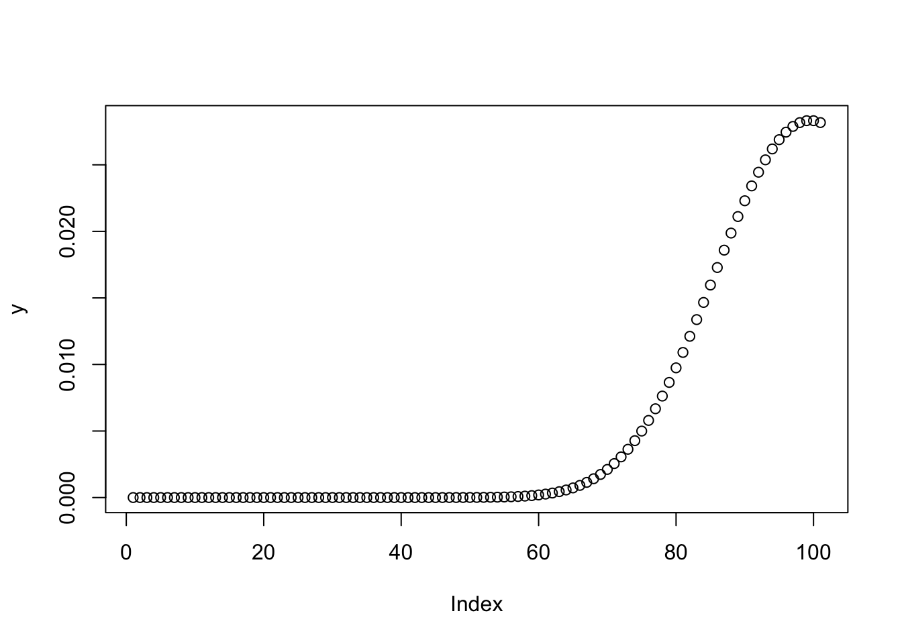
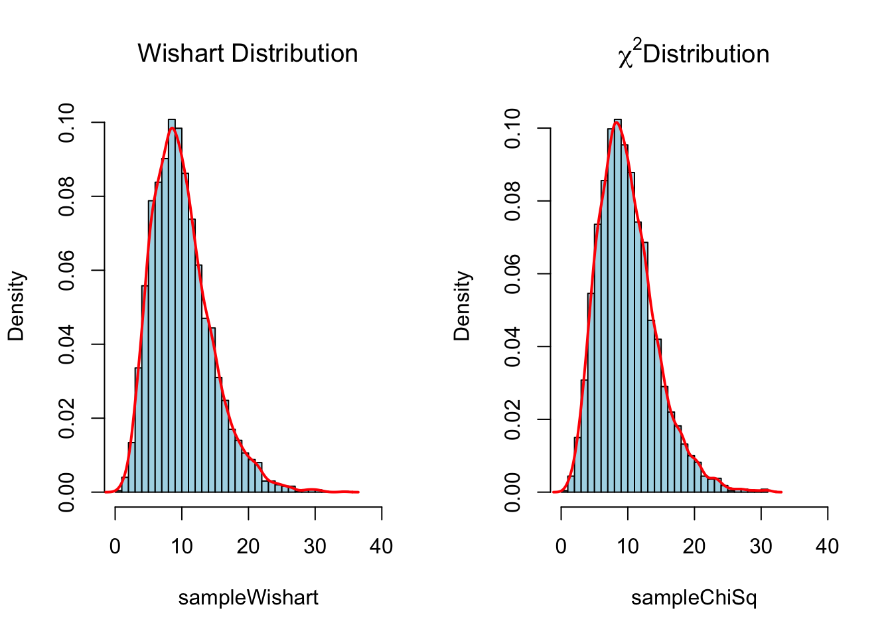
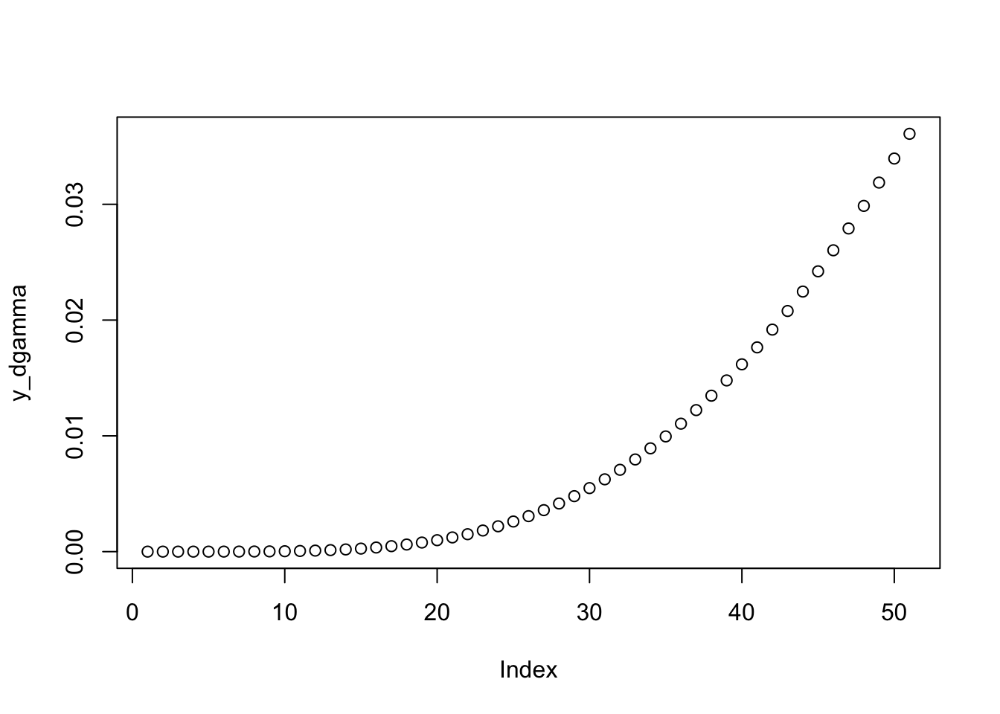
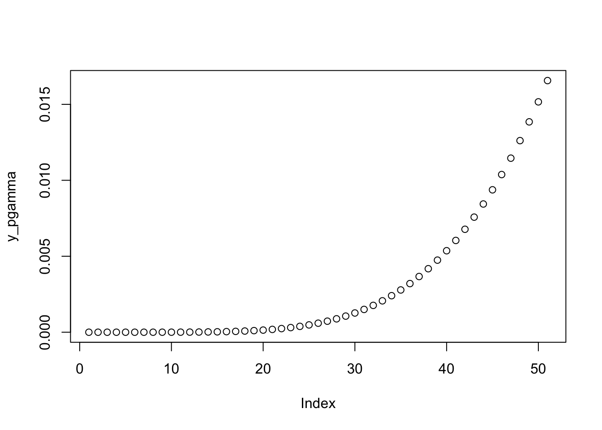
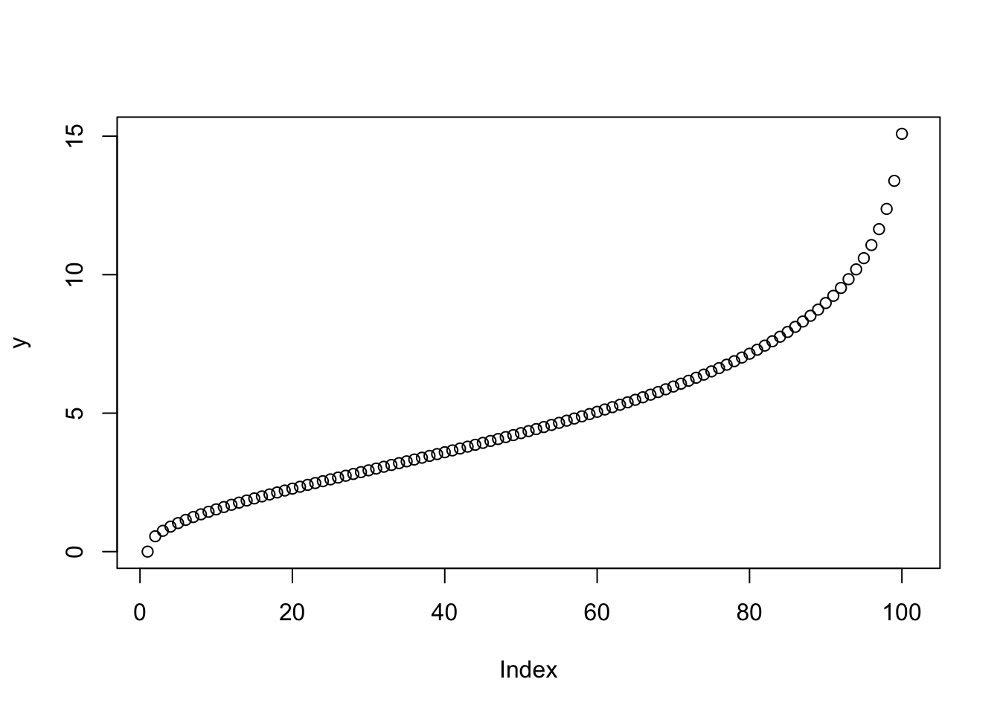
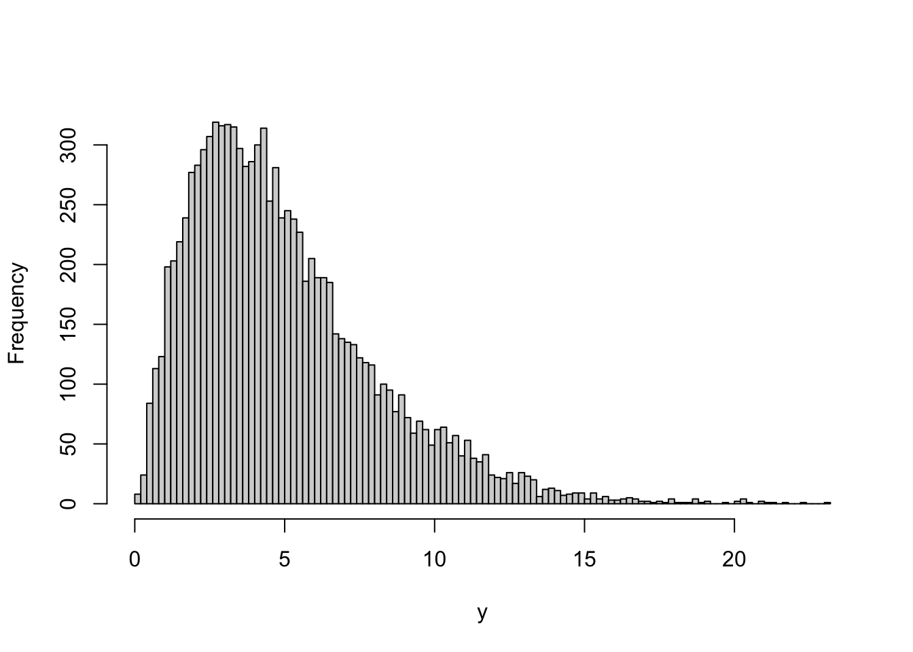

Chapter 3 Introduction/Interpretation to Probability
Before we going to this Chapter, we need load a few packages that provide useful functions to achieve our learning objects.
# Make sure to install those packages before you load them.
# Use the function: install.packages("package_name") to install any package.
library(Rlab) # For use Bernoulli distribution
library(dplyr) # For data manipulation
library(ggplot2) # For plotting the advanced plots
library(MASS) # For use Bivariate/Multivariate normal distributions
library(invgamma) # For use inverse gamma related function
library(tidyr) # For data manipulation3.1 Discrete Distribution Variables
A discrete distribution describes the probabilistic properties of a random variable that takes on a set of values that are discrete, i.e. separate and distinct from one another - a discrete random variable. Discrete values are separated only by a finite number of units - in flipping a coin five times, the result of 5 heads is separated from the result of 2 heads by two units (3 heads and 4 heads).
3.1.1 Bernoulli Distribution
3.1.1.1 Definition
A Bernoulli distribution is a discrete probability distribution for a Bernoulli trial — a random experiment that has only two outcomes (usually called a “Success” or a “Failure”). For example, the probability of getting a heads (a “success”) while flipping a coin is 0.5. The probability of “failure” is 1 – P (1 minus the probability of success, which also equals 0.5 for a coin toss). It is a special case of the binomial distribution for n = 1. In other words, it is a binomial distribution with a single trial (e.g. a single coin toss).
The Bernoulli distribution with prob \(= p\) has density \[p(x) = {p}^{x} {(1-p)}^{1-x}\] for \(x = 0\) or 1.
3.1.1.2 R Illustration
# Create a sample of 10 numbers which are incremented by 1.
Berno_data <- seq(0,10, by = 1)
# using dbern() function to simulate a Bernoulli distribution
# Bernoulli Probability Density Function
Bern_PDF <- dbern(Berno_data,prob=0.2)
# Plot dbern values
plot(Bern_PDF,type="o")The Bernoulli distribution is closely related to the Binomial distribution. As long as each individual Bernoulli trial is independent, then the number of successes in a series of Bernoulli trails has a Binomial Distribution. The Bernoulli distribution can also be defined as the Binomial distribution with n = 1.
3.1.1.3 Exericise
3.1.2 Binomial Distribution
3.1.2.1 Definition
A binomial distribution can be thought of as simply the probability of a SUCCESS or FAILURE outcome in an experiment or survey that is repeated multiple times. The binomial is a type of distribution that has two possible outcomes (the prefix “bi” means two, or twice). For example, a coin toss has only two possible outcomes: heads or tails and taking a test could have two possible outcomes: pass or fail.
A binomial distribution commonly contains two variables. - The first variable in the binomial formula, n, stands for the number of times the experiment runs. - The second variable, p, represents the probability of one specific outcome.
For example, let’s suppose you wanted to know the probability of getting a 1 on a die roll. if you were to roll a die 20 times, the probability of rolling a one on any throw is 1/6. Roll twenty times and you have a binomial distribution of (n=20, p=1/6). SUCCESS would be “roll a one” and FAILURE would be “roll anything else.” If the outcome in question was the probability of the die landing on an even number, the binomial distribution would then become (n=20, p=1/2). That’s because your probability of throwing an even number is one half.
The binomial distribution with size \(= n\) and prob \(= p\) has density \[p(x) = {n \choose x} {p}^{x} {(1-p)}^{n-x}\] for \(x = 0, \ldots, n\). Note that binomial coefficients can be computed by choose in R.
3.1.2.2 R Illustration
# Create a sample of 50 numbers which are incremented by 1.
x <- seq(0,50,by = 1)
# Create the binomial distribution.
# The dbinom() example below contains three arguments. The first one is a vector of quantiles, the second one is the number of observations, and the third one is the probability of each trial.
y <- dbinom(x,50,0.5)
# We can plot the binomial distribution
plot(y)# We can also use the pbinom() function to calculate the cumulative probability of an event. It is a single value representing the probability.
# Calculate the probability of getting 26 or less heads from a 51 tosses of a coin.
x <- pbinom(26,51,0.5)
x # x=0.61## [1] 0.610116# qbinom()function takes probability value and gives a number whose cumulative value matches the probability value.
# How many heads will have a probability of 0.25 will come out when a coin is tossed 51 times?
x <- qbinom(0.25,51,0.5)
x # x=23## [1] 23# rbinom() function generates required number of random values of given probability from a given sample.
# Find 10 random values from a sample of 150 with probability of 0.4.
x <- rbinom(10,150,.4) # Watchout! If you don't set.seed(), then each time you will get a new vector of random values.
x## [1] 66 71 59 65 63 66 54 51 64 633.1.2.3 Exericise
3.1.3 Negative Binomial Distribution
3.1.3.1 Definition
The negative binomial is similar to the binomial with two differences:
The number of trials, n is not fixed.
A random variable Y= the number of trials needed to make r successes.
Example: Take a standard deck of cards, shuffle them, and choose a card. Replace the card and repeat until you have drawn two aces. Y is the number of draws needed to draw two aces. As the number of trials isn’t fixed (i.e. you stop when you draw the second ace), this makes it a negative binomial distribution.
Note: The random variable is the number of repeated trials, X, that produce a certain number of successes, r. In other words, it’s the number of failures before a success. This is the main difference from the binomial distribution: with a regular binomial distribution, you’re looking at the number of successes. With a negative binomial distribution, it’s the number of failures that counts.
The negative binomial distribution with size \(= n\) and prob \(= p\) has density \[ p(x) = \frac{\Gamma(x+n)}{\Gamma(n) x!} p^n (1-p)^x\] for \(x = 0, 1, 2, \ldots\), \(n > 0\) and \(0 < p \le 1\).
3.1.3.2 R Illustration
- Negative Binomial Density in R (dnbinom Function)
# Create a sample of 100 numbers which are incremented by 1.
x <- seq(0,100,by=1)
# use the dnbinom() function to return the corresponding negative binomial values of each element of our input vector with non-negative integers.
# Note that we are using a size (i.e. number of trials) and a probability of 0.5
y <- dnbinom(x,size=100,prob=0.5)
# plot the negative binomial distribution
plot(y)
- Negative Binomial Cumulative Distribution Function (pnbinom Function)
# In this example, we will still use the vector x that we created before
x## [1] 0 1 2 3 4 5 6 7 8 9 10 11 12 13 14 15 16 17
## [19] 18 19 20 21 22 23 24 25 26 27 28 29 30 31 32 33 34 35
## [37] 36 37 38 39 40 41 42 43 44 45 46 47 48 49 50 51 52 53
## [55] 54 55 56 57 58 59 60 61 62 63 64 65 66 67 68 69 70 71
## [73] 72 73 74 75 76 77 78 79 80 81 82 83 84 85 86 87 88 89
## [91] 90 91 92 93 94 95 96 97 98 99 100# Apply pnbinom function
y <- pnbinom(x,size=100,prob=0.5)
# plot the cumulative distribution
plot(y) # Note although the shape looks almost the same with the previous one. However, the y axis' number is way larger than the previous plot.- Negative Binomial Quantile Function (qnbinom Function)
# Similar to the R syntax of the previous examples, we can create a plot containing the negative binomial quantile function. As input, we need to specify a vector of probabilities:
x <- seq(0,1,by=0.01)
# Apply qnbinom function
y <- qnbinom(x, size = 100, prob = 0.5)
# plot the Quantile distribution
plot(y)- Simulation of Random Numbers (rnbinom Function)
# we need to specify a seed and a sample size first
set.seed(12345) # Set seed for reproducibility
N <- 10000
# Draw N nbinomially distributed values
y <- rnbinom(N,size=100,prob=0.5)
# This time we use the hist() function to plot those randomize distributed values
hist(y,breaks = 100,main = "")- Example 1: An oil company has a p = 0.20 chance of striking oil when drilling a well. What is the probability the company drills x = 7 wells to strike oil r = 3 times?
# Set
r = 3
p = 0.20
n = 7 - r
# exact probability
dnbinom(x = n, size = r, prob = p)## [1] 0.049152# simulated probability
mean(rnbinom(n = 10000, size = r, prob = p) == n)## [1] 0.0483# We can even plot it.
data.frame(x = 0:10, prob = dnbinom(x = 0:10, size = r, prob = p)) %>%
mutate(Failures = ifelse(x == n, n, "other")) %>%
ggplot(aes(x = factor(x), y = prob, fill = Failures)) +
geom_col() +
geom_text(
aes(label = round(prob,2), y = prob + 0.01),
position = position_dodge(0.9),
size = 3,
vjust = 0
) +
labs(title = "Probability of r = 3 Successes in X = 7 Trials",
subtitle = "NB(3,.2)",
x = "Failed Trials (X - r)",
y = "Probability") - Example 2: What is the expected number of trials to achieve r=3 successes when the probability of success is p=0.2?
r = 3
p = 0.20
# exact mean
r/p## [1] 15# simulated mean
mean(rnbinom(n=10000,size=3,prob=p))+r## [1] 14.9595# Plot
data.frame(x = 1:20,
pmf = dnbinom(x = 1:20, size = r, prob = p),
cdf = pnbinom(q = 1:20, size = r, prob = p, lower.tail = TRUE)) %>%
ggplot(aes(x = factor(x), y = cdf)) +
geom_col() +
geom_text(
aes(label = round(cdf,2), y = cdf + 0.01),
position = position_dodge(0.9),
size = 3,
vjust = 0
) +
labs(title = "Cumulative Probability of X = x failed trials to achieve 3rd success",
subtitle = "NB(3,.2)",
x = "Failed Trials (x)",
y = "probability") 3.1.3.3 Exercise
3.1.4 Poisson Distribution
3.1.4.1 Definition
The Poisson distribution is a discrete distribution which was designed to count the number of events that occur in a particular time interval. A common (approximate) example is counting the number of customers who enter a bank in a particular hour. We traditionally call the expected number of occurrences λ or lambda.
Poisson vs. binomial: The key difference between the Poisson and the binomial is that for the binomial, the total number of trials in the sample is fixed, while for the Poisson, the total number of events in the interval is not fixed. That said, the binomial distribution begins to look a lot like the Poisson distribution when the number of trials grows large, and the probability of success is small.
The Poisson distribution has density \[p(x) = \frac{\lambda^x e^{-\lambda}}{x!}\] for \(x = 0, 1, 2, \ldots\) . The mean and variance are \(E(X) = Var(X) = \lambda\).
Note that \(\lambda = 0\) is really a limit case (setting \(0^0 = 1\)) resulting in a point mass at \(0\), see also the example.
3.1.4.2 R Illustration
- Random Samples: rpois
# As with the binomial, we can easily sample from the Poisson using the rpois() function, which now take takes two arguments.
# n: how many outcomes we want to sample
# lambda: the expected number of events per interval (avarage)
# We create 100 random values where the expected number of events per interval is equal to 14
x <- rpois(n = 100, lambda = 14)
x## [1] 5 18 11 22 10 14 10 19 19 9 17 10 12 10 18 14 12 6 11 17 15 8 9 19 14
## [26] 11 13 14 17 10 16 11 14 21 10 17 15 11 14 12 10 14 14 22 17 15 14 11 13 15
## [51] 25 19 15 9 12 15 18 9 14 6 11 14 9 11 14 15 11 8 15 20 11 11 9 16 12
## [76] 9 7 9 16 15 18 9 8 12 20 12 10 22 13 10 16 10 19 9 19 8 21 14 13 15# We can plot the poisson distribution
barplot(table(x))- Density Functions: dpois
# Suppose we want to know the probability of getting 12 occurrences, we can get this easily with.
dpois(x = 12, lambda = 14)## [1] 0.09841849# As before, we can easily obtain and graph the main part of the distribution.
barplot(height = dpois(0:30, lambda = 14),
names.arg = 0:30,
main = "Poisson PDF", xlab = 'X', ylab = 'Probability')- Cumulative Distribution Functions: ppois
# Suppose we want to know the probability of getting at most 12 occurrences, we can get this easily with,
ppois(q = 12, lambda = 14)## [1] 0.3584584# Note this contains a cumulative probability from 1 to 12 occurrences.
# As before, we can easily obtain and graph the main part of the CDF.
barplot(height = ppois(0:30, lambda = 14),
names.arg = 0:30,
main = "Poisson CDF", xlab = 'X', ylab = 'Probability')- Example: If there are twelve cars crossing a bridge per minute on average, find the probability of having seventeen or more cars crossing the bridge in a particular minute.
# The probability of having sixteen or less cars crossing the bridge in a particular minute is given by the function ppois.
ppois(16, lambda=12) # lower tail means less than## [1] 0.898709# Hence the probability of having seventeen or more cars crossing the bridge in a minute is in the upper tail of the probability density function.
ppois(16, lambda=12,lower=FALSE) # Upper tail ## [1] 0.1012913.1.4.3 Exercise
3.1.5 Multinomial Distribution
The multinomial distribution is a generalization of the binomial distribution to k categories instead of just binary (success/fail). For n independent trials each of which leads to a success for exactly one of k categories, the multinomial distribution gives the probability of any particular combination of numbers of successes for the various categories. A multinomial experiment is almost identical with one main difference: a binomial experiment can have two outcomes, while a multinomial experiment can have multiple outcomes.
If x is a \(K\)-component vector, dmultinom(x, prob) is the probability \[P(X_1=x_1,\ldots,X_K=x_k) = C \times \prod_{j=1}^K \pi_j^{x_j}\] where \(C\) is the ‘multinomial coefficient’ \(C = N! / (x_1! \cdots x_K!)\) and \(N = \sum_{j=1}^K x_j\).
By definition, each component \(X_j\) is binomially distributed as Bin(size, prob[j]) for \(j = 1, \ldots, K\).
The rmultinom() algorithm draws binomials \(X_j\) from \(Bin(n_j,P_j)\) sequentially, where \(n_1 = N\) (N := size), \(P_1 = \pi_1\) (\(\pi\) is prob scaled to sum 1), and for \(j \ge 2\), recursively, \(n_j = N - \sum_{k=1}^{j-1} X_k\) and \(P_j = \pi_j / (1 - \sum_{k=1}^{j-1} \pi_k)\).
3.1.5.1 R Illustration
- Generate Multinomial Random Variables
Generate Multinomial Random Variables With Varying Probabilities Given a matrix of multinomial probabilities where rows correspond to observations and columns to categories (and each row sums to 1), generates a matrix with the same number of rows as has probs and with m columns. The columns represent multinomial cell numbers, and within a row the columns are all samples from the same multinomial distribution.
# rmultinom(n, size, prob)
# Set the probabilities for each trails
my_prob <- c(0.2,0.3,0.1,0.4)
# Set the number of experiments
number_of_experiments <- 10
# Set the number of samples
number_of_samples <- 10
# Create a simulated experiment result based on the pre-defined variables
experiments <- rmultinom(n=number_of_experiments, size=number_of_samples, prob=my_prob)
experiments # See the simulated results## [,1] [,2] [,3] [,4] [,5] [,6] [,7] [,8] [,9] [,10]
## [1,] 2 3 1 3 4 3 1 1 0 1
## [2,] 0 4 2 1 3 2 4 5 2 3
## [3,] 1 2 2 0 0 3 0 1 1 2
## [4,] 7 1 5 6 3 2 5 3 7 4Compute multinomial probabilities use dmultinom()
- Chess Game Prediction: Two chess players have the probability Player A would win is 0.40, Player B would win is 0.35, game would end in a draw is 0.25.If these two chess players played 12 games, what is the probability that Player A would win 7 games, Player B would win 2 games, the remaining 3 games would be drawn?
# Use dmultinom() function to compute the probability
dmultinom(x=c(7,2,3), prob = c(0.4,0.35,0.25))## [1] 0.02483712# The probability equals to 0.025- Opinion Polls on Election In a little town, 40% of the eligible voters prefer candidate A, 10% prefer candidate B, 50% have no preference.You randomly sample 10 eligible voters. What is the probability that 4 will prefer candidate A, 1 will prefer candidate B, 5 will have no preference ?
# Use dmultinom() function to compute the probability
dmultinom(x=c(4,1,5), prob = c(0.4,0.1,0.5))## [1] 0.1008# The probability equals to 0.13.1.5.2 Exercise
3.2 Continuous Random variables
A continuous random variable may take on a continuum of possible values.
3.2.1 Normal Distribution
3.2.1.1 Definition
In probability theory, a normal (or Gaussian or Gauss or Laplace–Gauss) distribution is a type of continuous probability distribution for a real-valued random variable.
The normal distribution has density \[ f(x) = \frac{1}{\sqrt{2\pi}\sigma} e^{-(x-\mu)^2/2\sigma^2}\] where \(\mu\) is the mean of the distribution and \(\sigma\) the standard deviation.
3.2.1.2 R Illustration
- Obtain densities of normal distributions using the function dnorm()
# draw a plot of the N(0,1) PDF
curve(dnorm(x), # The default setting, mean=0, sd=1.
xlim = c(-3.5, 3.5),
ylab = "Density",
main = "Standard Normal Density Function") 
# We can also obtain the density at different positions by passing a vector to dnorm()
# compute density at x=-1.96, x=0 and x=1.96
dnorm(x = c(-1.96, 0, 1.96))## [1] 0.05844094 0.39894228 0.05844094# creating a sequence of values
# between -15 to 15 with a difference of 0.1
x = seq(-15, 15, by=0.1)
y = dnorm(x, mean(x), sd(x))
# Plot the graph.
plot(x, y)- Cumulative distribution function use pnorm() function
# creating a sequence of values
# between -10 to 10 with a difference of 0.1
x <- seq(-10, 10, by=0.1)
y <- pnorm(x, mean = 2.5, sd = 2)
# Plot the graph.
plot(x, y)- Calculate the probability use pnorm() function
qnorm() function is the inverse of pnorm() function. It takes the probability value and gives output which corresponds to the probability value. It is useful in finding the percentiles of a normal distribution.
# Create a sequence of probability values increment by 0.02.
x <- seq(0, 1, by = 0.02)
y <- qnorm(x, mean(x), sd(x))
# Plot the graph.
plot(x, y)# What is the probability of getting a value less than 0.75 in normal distribution x.
qnorm(0.75, mean(x), sd(x))## [1] 0.7005402# What is the probability of getting a value more than 0.75 in normal distribution x.
qnorm(0.75, mean(x), sd(x),lower.tail = FALSE)## [1] 0.2994598- Example: A real world problem. Assume that the test scores of a college entrance exam fits a normal distribution. Furthermore, the mean test score is 72, and the standard deviation is 15.2. What is the percentage of students scoring 84 or more in the exam?
# We apply the function pnorm() of the normal distribution with mean 72 and standard deviation 15.2. Since we are looking for the percentage of students scoring higher than 84, we are interested in the upper tail of the normal distribution.
pnorm(84, mean=72, sd=15.2, lower.tail=FALSE) ## [1] 0.2149176## The percentage of students scoring 84 or more in the college entrance exam is 21.5%.3.2.1.3 Exercise
3.2.2 Bivariate/Multivariate normal distribution
3.2.2.1 Definition
The “regular” normal distribution has one random variable; A bivariate normal distribution is made up of two independent random variables. The two variables in a bivariate normal are both are normally distributed, and they have a normal distribution when both are added together. Visually, the bivariate normal distribution is a three-dimensional bell curve.
If x is a \(K\)-component vector, dmultinom(x, prob) is the probability \[P(X_1=x_1,\ldots,X_K=x_k) = C \times \prod_{j=1}^K \pi_j^{x_j}\] where \(C\) is the ‘multinomial coefficient’ \(C = N! / (x_1! \cdots x_K!)\) and \(N = \sum_{j=1}^K x_j\).
By definition, each component \(X_j\) is binomially distributed as Bin(size, prob[j]) for \(j = 1, \ldots, K\).
The rmultinom() algorithm draws binomials \(X_j\) from \(Bin(n_j,P_j)\) sequentially, where \(n_1 = N\) (N := size), \(P_1 = \pi_1\) (\(\pi\) is prob scaled to sum 1), and for \(j \ge 2\), recursively, \(n_j = N - \sum_{k=1}^{j-1} X_k\) and \(P_j = \pi_j / (1 - \sum_{k=1}^{j-1} \pi_k)\).
3.2.2.2 R Illustration
- Generate Bivariate Normal Distribution
# Set seed for reproducibility
set.seed(12905)
# Specify sample size
n <- 1000
# Specify means of variables. Since we have two dependent variables, so we have two means in here.
mu <- c(5,2)
# Specify the covariance matrix of the variables
sigma <- matrix(c(10,5,3,7),ncol=2)
# Create random sample from bivariate normal distribution [only check the first 10 rows in here]
head(mvrnorm(n=n,mu=mu,Sigma=sigma),10)## [,1] [,2]
## [1,] 5.306105 4.8550305
## [2,] 5.931984 4.4007425
## [3,] 8.853795 5.6017163
## [4,] 1.561265 1.9134855
## [5,] 1.030162 3.6027674
## [6,] 5.106347 1.3148867
## [7,] 2.763231 2.2664692
## [8,] 6.395151 -0.3969557
## [9,] 11.098483 4.8093444
## [10,] 13.360460 4.1503419x <- mvrnorm(n=n,mu=mu,Sigma=sigma)
# Check the plot of these two variables
plot(x)- Generate random Multivariate Normal Distribution
This time we are specifying three means and a variance-covariance matrix with three columns:
# Specify sample size
n <- 1000
mu <- c(5,2,8)
# Specfy the covariance matrix of the variables.
sigma <- matrix(c(10,5,2,3,7,1,1,8,3),ncol=3)
# Actually, you can use the
# Random sample from multivariate normal distribution
x <- mvrnorm(n = n, mu = mu, Sigma = sigma)
# Check the first 10 rows
head(x,10)## [,1] [,2] [,3]
## [1,] 4.840284 3.3369008 8.205132
## [2,] 2.962799 -0.4208684 9.742188
## [3,] 6.150574 3.0363470 9.890894
## [4,] 1.359660 -2.1778558 8.421757
## [5,] 3.919643 6.8013523 7.378332
## [6,] 7.663654 5.6361319 7.266243
## [7,] 8.251586 5.3170855 10.471976
## [8,] 4.241072 0.8184044 9.027621
## [9,] 3.036311 0.3299350 7.458339
## [10,] 5.892626 1.9481643 6.002565- Use dmultinom() to compute the density function
# Compute the probability of vector x
x <- seq(1:3)
dmultinom(x, prob = c(1/8, 2/8, 5/8))## [1] 0.11444093.2.2.3 Exercise
3.2.3 Uniform Distribution
3.2.3.1 Definition
In probability theory and statistics, the continuous uniform distribution or rectangular distribution is a family of symmetric probability distributions. The distribution describes an experiment where there is an arbitrary outcome that lies between certain bounds.
If min or max are not specified they assume the default values of 0 and 1 respectively.
The uniform distribution has density \[f(x) = \frac{1}{max-min}\] for \(min \le x \le max\).
3.2.3.2 R Illustration
- Uniform Probability Density Function (dunif Function)
# Specify x-values for dunif function
x <- seq(0, 100, by = 1)
# specifying the minimum value of the uniform distribution to be 10 and the maximum value to be 50
y <- dunif(x, min = 10, max = 50)
# Plot PDF
plot(y, type = "o") 
# Figure above shows the output of the previous R syntax. As you can see, our uniform density remains at 0 up to the point 10, (i.e. the minimum value of our uniform distribution). Then it instantly goes up to a probability of 1 and remains at this level until we reach the value 50 (i.e. the maximum of our uniform distribution).- Uniform Cumulative Distribution Function (punif Function)
# We will use the same x vector in the previous example
x## [1] 0 1 2 3 4 5 6 7 8 9 10 11 12 13 14 15 16 17
## [19] 18 19 20 21 22 23 24 25 26 27 28 29 30 31 32 33 34 35
## [37] 36 37 38 39 40 41 42 43 44 45 46 47 48 49 50 51 52 53
## [55] 54 55 56 57 58 59 60 61 62 63 64 65 66 67 68 69 70 71
## [73] 72 73 74 75 76 77 78 79 80 81 82 83 84 85 86 87 88 89
## [91] 90 91 92 93 94 95 96 97 98 99 100# Use punif() function to get cumulative distribution function of a uniform distribution (CDF).
y <- punif(x, min = 10, max = 50)
# plot the CDF
plot(y,type="o")- Uniform Quantile Function (qunif Function)
# First we create a sequence of probabilities (i.e. values between 0 and 1).
x <- seq(0,1,by=0.01)
# get the corresponding values of the quantile function
y <- qunif(x,min=10,max=50)
# plot the function
plot(y)
- Generating Random Numbers (runif Function)
# To create a reproducible example, we need to specify a seed:
set.seed(12905)
# simulate a set of uniformly distributed random numbers
# Specify sample size
N <- 10000
# Draw N uniformly distributed values
y <- runif(N, min = 10, max = 50)
# We can illustrate the distribution of our random numbers in a histogram by applying the hist() function
hist(y,
breaks = 50,
main = "",
xlim = c(0, 100))
# This plot looks like is not very Uniformed, could you increase the total number to see what will happen?- Example
On average, someone sends a money order once per 15 minutes (θ=.25). What is the probability someone sends α=10* money orders in less than x=3 hours?*
alpha = 10
theta = 15 / 60
x = 3
# exact probability
pgamma(q = x, shape = alpha, scale = theta)## [1] 0.7576078# simulated probability distribution
mean(rgamma(n = 10000, shape = alpha, scale = theta) <= x)## [1] 0.7679# Plot the probability distribution
data.frame(x = 0:1000 / 100, prob = pgamma(q = 0:1000 / 100, shape = alpha, scale = theta, lower.tail = TRUE)) %>%
mutate(Interval = ifelse(x >= 0 & x <= 3, "0 to 3", "other")) %>%
ggplot(aes(x = x, y = prob, fill = Interval)) +
geom_area(alpha = 0.3) +
labs(title = "X ~ Gam(alpha = 10, theta = .25)",
subtitle = "Probability of 10 events in X hours when the mean time to an event is .25 hours.",
x = "Interval (x)",
y = "Cum Probability") 3.2.3.3 Exercise
3.2.4 Gamma Distribution
3.2.4.1 Definition
The gamma distribution is another widely used distribution. Its importance is largely due to its relation to exponential and normal distributions. Here, we will provide an introduction to the gamma distribution.
If beta (or scale or rate) is omitted, it assumes the default value of 1. The Gamma distribution with parameters alpha (or shape) \(= a\) and beta (or scale) \(= s\) has density \[ f(x)= \frac{1}{{\sigma}^{\alpha}\Gamma(\alpha)} {x}^{\alpha-1} e^{-x/\sigma}% \] for \(x > 0\), \(a > 0\) and \(s > 0\). The mean and variance are \(E(X) = a*s\) and \(Var(X) = a*s^2\).
In R, dgamma gives the density, pgamma gives the distribution function, qgamma gives the quantile function, and rgamma generates random deviates.
3.2.4.2 R Illustration
- dgamma() Function for Probability Density Function
# R program to plot gamma distribution
# Specify x-values for gamma function
x_dgamma <- seq(0, 2, by = 0.04)
# Apply dgamma function
y_dgamma <- dgamma(x_dgamma, shape = 6)
# Plot dgamma values
plot(y_dgamma)- pgamma() function for cumulative distribution function (CDF)
pgamma() function is used in cumulative distribution function (CDF) of the gamma distribution.
# R program to plot gamma distribution
# Specify x-values for gamma function
x_pgamma <- seq(0, 2, by = 0.04)
# Apply pgamma function
y_pgamma <- pgamma(x_pgamma, shape = 6)
# Plot pgamma values
plot(y_pgamma)
- qgamma() Function for quantile function
It is known as gamma quantile function of the gamma distribution and used to plot qgamma distribution.
# R program to plot gamma distribution
# Specify x-values for gamma function
x_qgamma <- seq(0, 1, by = 0.03)
# Apply qgamma function
y_qgamma <- qgamma(x_qgamma, shape = 6)
# Plot qgamma values
plot(y_qgamma)- rgamma() Function for generating random number
This function is basically used for generating random number in gamma distribution.
# R program to plot gamma distribution
# Set seed for reproducibility
set.seed(12905)
# Specify sample size
N <- 800
# Draw N gamma distributed values
y_rgamma <- rgamma(N, shape = 5)
# Print values to RStudio console (first 10)
head(y_rgamma,10)## [1] 3.452603 5.068824 3.287633 5.866577 4.687259 5.485377 4.680162 7.997487
## [9] 1.129616 4.746143# Plot of randomly drawn gamma density
hist(y_rgamma, breaks = 500, main = "")3.2.4.3 Exercise
3.2.5 Inverse Gamma Distribution
3.2.5.1 Definition
The inverse gamma distribution (also called the inverted gamma distribution) is the reciprocal of the gamma distribution. It has two positive parameters (α and β):
1, The shape parameter α controls the height. The higher the alpha, the taller the probability density function (PDF); higher values for the shape parameter will also result in thinner tails.
2, The scale parameter β controls the spread.
The shorthand for the distribution, X~inverted gamma(α,β), or IG(α, β), means that a random variable X has this distribution with positive parameters α and β.
The main function of the inverse gamma distribution is in Bayesian probability, where it is used as a marginal posterior (a way to summarize uncertain quantities) or as a conjugate prior (a prior is a probability distribution that represents your beliefs about a quantity, without taking any evidence into account). In other words, it’s used to model uncertain quantities.
The inverse gamma distribution with parameters shape \(=\alpha\) and scale \(=\sigma\) has density \[ f(x)= \frac{s^a}{\Gamma(\alpha)} {x}^{-(\alpha+1)} e^{-\sigma/x}% \] for \(x \ge 0\), \(\alpha > 0\) and \(\sigma > 0\). (Here \(\Gamma(\alpha)\) is the function implemented by R’s gamma() and defined in its help.
The mean and variance are \(E(X) = \frac{\sigma}{\alpha}-1\) and \(Var(X) = \frac{\sigma^2}{(\alpha-1)^2 (\alpha-2)}\), with the mean defined only for \(\alpha > 1\) and the variance only for \(\alpha > 2\).
3.2.5.2 R Illustration
- Probability Density Function use dinvgamma() function
# Greate a simulated data set
x <- seq(0,5,.01)
# Run the PDF function
y <- dinvgamma(x, shape=7, rate=10)
# Plot the PDF
qplot(x,y,geom="line")+theme_bw()## Warning: Removed 1 row(s) containing missing values (geom_path).
- Culmulative Density Function with pinvgamma() function
# Greate a simulated data set
x <- seq(0,5,.01)
# Run the PDF function
y <- pinvgamma(x, shape=7, rate=10)
# Plot the PDF
qplot(x,y,geom="line")+theme_bw()
- Quantile function with qinvgamma()
# We will use the CDF from the previous example
y <- pinvgamma(x, shape=7, rate=10)
# Run a Quantile function with qinvgamma()
qf <- qinvgamma(y,shape=7, rate=1)
# Plot the Quantile function
plot(qf,type="o")
- Greate Random sample using rgamma() function
# Draw samples from inverse gamma distribution with shape parameter 1 and scale parameter 1
samples <- rinvgamma(n=1000,shape=1,scale=1)
# Calculate density of samples
densities<-dinvgamma(samples, shape=1, scale=1)3.2.5.3 Exercise
3.2.6 Chi-squared Distribution
3.2.6.1 Definition
The chi-square distribution (also called the chi-squared distribution) is a special case of the gamma distribution; A chi square distribution with n degrees of freedom is equal to a gamma distribution with a = n / 2 and b = 0.5 (or β = 2).
Let’s say you have a random sample taken from a normal distribution. The chi square distribution is the distribution of the sum of these random samples squared . The degrees of freedom (k) are equal to the number of samples being summed. For example, if you have taken 10 samples from the normal distribution, then df = 10. The degrees of freedom in a chi square distribution is also its mean. In this example, the mean of this particular distribution will be 10. Chi square distributions are always right skewed. However, the greater the degrees of freedom, the more the chi square distribution looks like a normal distribution.
The chi-squared distribution with df\(= n \ge 0\) degrees of freedom has density \[f_n(x) = \frac{1}{{2}^{n/2} \Gamma (n/2)} {x}^{n/2-1} {e}^{-x/2}\] for \(x > 0\). The mean and variance are \(n\) and \(2n\).
The non-central chi-squared distribution with df\(= n\) degrees of freedom and non-centrality parameter ncp \(= \lambda\) has density \[ f(x) = e^{-\lambda / 2} \sum_{r=0}^\infty \frac{(\lambda/2)^r}{r!}\, f_{n + 2r}(x)\] for \(x \ge 0\). For integer \(n\), this is the distribution of the sum of squares of \(n\) normals each with variance one, \(\lambda\) being the sum of squares of the normal means; further,
\(E(X) = n + \lambda\), \(Var(X) = 2(n + 2*\lambda)\), and \(E((X - E(X))^3) = 8(n + 3*\lambda)\).
Note that the degrees of freedom df\(= n\), can be non-integer, and also \(n = 0\) which is relevant for non-centrality \(\lambda > 0\), see Johnson et al (1995, chapter 29). In that (noncentral, zero df) case, the distribution is a mixture of a point mass at \(x = 0\) (of size pchisq(0, df=0, ncp=ncp)) and a continuous part, and dchisq() is not a density with respect to that mixture measure but rather the limit of the density for \(df \to 0\).
Note that ncp values larger than about 1e5 may give inaccurate results with many warnings for pchisq and qchisq.
3.2.6.2 R Illustration
- Chi Square Density using dchisq() Function
# Create a sequence of input values
x <- seq(0, 20, by = 0.1)
# Produce a chi square density with different degrees of freedom
y <- dchisq(x, df = 5)
# Plot the PDF
plot(y)- Chi Square Cumulative Distribution using pchisq() Function
# Specify x-values for pchisq function
x <- seq(0, 20, by = 0.1)
# use the pchisq function to this vector to produce our desired values
y <- pchisq(x, df = 5)
# Plot the CDF
plot(y) - Chi Square Quantile using qchisq() Function
# Specify x-values for qchisq function
x <- seq(0, 1, by = 0.01)
# Run the quantile function
y <- qchisq(x, df = 5)
# Plot qchisq values
plot(y)- Simulation of Random Numbers using rchisq() Function
# Specify the seed and sample size
set.seed(12905) # Set seed for reproducibility
N <- 10000 # Specify sample size
# Apply the rchisq function
y <- rchisq(N, df = 5) # Draw N chi squared distributed values
head(y,10) ## [1] 2.649654 4.769713 2.446810 5.882415 4.250951 5.346329 4.241394 2.786218
## [9] 8.428605 3.518530# create a histogram which illustrates the distribution of our random numbers
hist(y,breaks=100,main="")# As you can see based on the Figure, our random numbers are distributed according to the chi square distribution.- Example:
Find the 95th percentile of the Chi-Squared distribution with 7 degrees of freedom.
# We apply the quantile function qchisq of the Chi-Squared distribution against the decimal values 0.95.
qchisq(.95,df=7)## [1] 14.06714Answer: The 95th percentile of the Chi-Squared distribution with 7 degrees of freedom is 14.067.
3.2.6.3 Exercise
3.2.7 F-Distribution
3.2.7.1 Definition
The F distribution is the ratio of two scaled chi-square distributions \(W_1\) and \(W_2\) with degrees of freedom \(df1\) and \(df2\).
\[F=\frac{W_{X}/df_{X}}{W_{Y}/df_{Y}}\] The F statistic may also be written
\[F=\frac{s_{X}^{2} / \sigma_{X}^{2}}{s_{Y}^{2} / \sigma_{Y}^{2}}=\frac{s_{X}^{2} / s_{Y}^{2}}{\sigma_{X}^{2} / \sigma_{Y}^{2}}\]
Like the chi-square distribution, the F distribution contains only positive values and in nonsymmetrical. There is an F distribution for each degree of freedom associated with \(s^2_A\) and \(s^2_B\).
For the F distribution (help (“FDist”)), the same rules apply as for the
χ^2-distribution and for the t distribution. We have to specify both numerator degrees of freedom (df1) and denominator degrees of freedom (df2). The functions are pf() (cumulative distribution function),qf() (quantile function), df() (probability density function), and rf() (random generation of F distributed scores).
3.2.7.2 R Illustration
- Probability density function (PDF) using df()
# Simulate some input
x <- seq(0, 20, by = 0.1)
# Apply PDF
y <- df(x, df1 = 3, df2 = 5)
# Plot df values
plot(y)- F Cumulative Distribution Function using pf function
# Use the same data input with the previous one
x <- seq(0, 20, by = 0.1)
# Apply the pf function to this input vector
y <- pf(x, df1 = 3, df2 = 5)
# plot the output
plot(y)
- F Quantile Function using fq()
# Simulate a data set
x <- seq(0, 1, by = 0.01)
# Apply qf function
y <- qf(x, df1 = 3, df2 = 5)
# Plot
plot(y) 
- Simulation of Random Numbers using rf() Function
# Specify a seed and a sample size
set.seed(12905) # Set seed for reproducibility
N <- 10000
# use the rf function to draw random numbers according to the F distribution
y <- rf(N, df1 = 3, df2 = 5) # Draw N F-distributed values
head(y,10) # Print first 10 values to RStudio console## [1] 0.3793875 0.2712459 0.6791474 1.2990890 2.5438808 1.5434430 1.1469831
## [8] 1.6831143 2.6335722 0.3043476# plot these random numbers in a histogram:
hist(y, # Plot of randomly drawn f density
breaks = 500,
main = "",
xlim = c(0, 15))
- Example: Compare different F distributions
# Let's compare the dfferent F distributions with differen degrees of freedom
data.frame(f = 0:1000 / 100) %>%
mutate(df_10_20 = df(x = f, df1 = 10, df2 = 20),
df_05_10 = df(x = f, df1 = 5, df2 = 10)) %>%
gather(key = "df", value = "density", -f) %>%
ggplot() +
geom_line(aes(x = f, y = density, color = df)) +
labs(title = "F at Various Degrees of Freedom",
x = "F",
y = "Density") 3.2.7.3 Exercise
3.2.8 Cauchy Density
3.2.8.1 Definition
The Cauchy distribution with location \(l\) and scale \(s\) has density \[f(x) = \frac{1}{\pi s} \left( 1 + \left(\frac{x - l}{s}\right)^2 \right)^{-1}% \] for all \(x\).
If location or scale are not specified, they assume the default values of 0 and 1 respectively.